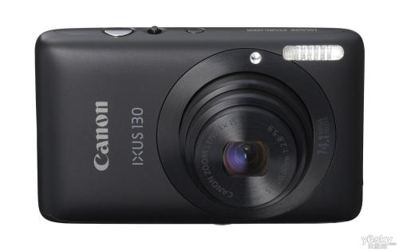

|  |
产品名称：佳能 IXUS 130佳能 IXUS 130（官方标配）松下原装SD卡2G（高速正品） 佳能IXUS系列专用皮包 索尼2.7英寸LCD保护贴（防刮/高透光/静电吸附） 摄影指南 |
| 主要参数 | |
|
型 号：PMP169B 内存容量：512M 屏幕尺寸：2.12英寸（最佳视觉比例16:9的宽度） 视频功能：支持ASF格式的MPG4，或通过软件转换成ASF播放，播放效果：320x420， 30fps/视频输出，输入/电视节目定时录制。 |
|
| 功能参数 | |
|
音频功能：支持音频格式：MP3，WMA,WAV/内置麦克风，支持LINEIN寻录/收音功能/内 置喇叭。 录音格式：44.1KHz,128Kbps，MP3，支持MIC/LINE-IN直录。 附加功能：支持图片格式：JPEG(EXIF2.1)/电子书浏览/多语言（中/英）设置。 |
|
| 其它参数 | |
|
接 口：USB接口，AV OUT接口，AV IN接口 扩展卡：可扩充2G SD,MMC卡 电 池：内置锂电池 尺 寸：105.2 x 476 x 15.6mm 重 量：90g |
|